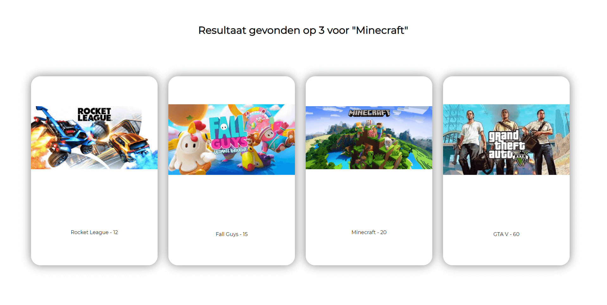
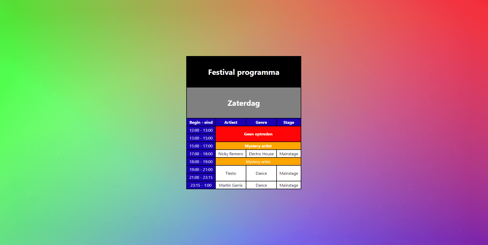
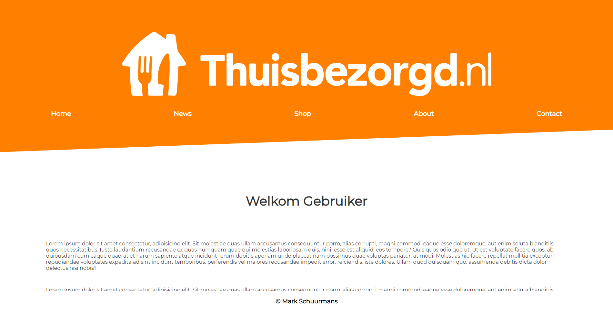

FEATURED PROJECT
Praktijk Opdracht
Hier onder zie je het eerste project van thema 2, de opdracht is een nieuwe startpagina voor het Koning Willem I College ontwerpen en realiseren.
Startpagina Koning Willem I College


